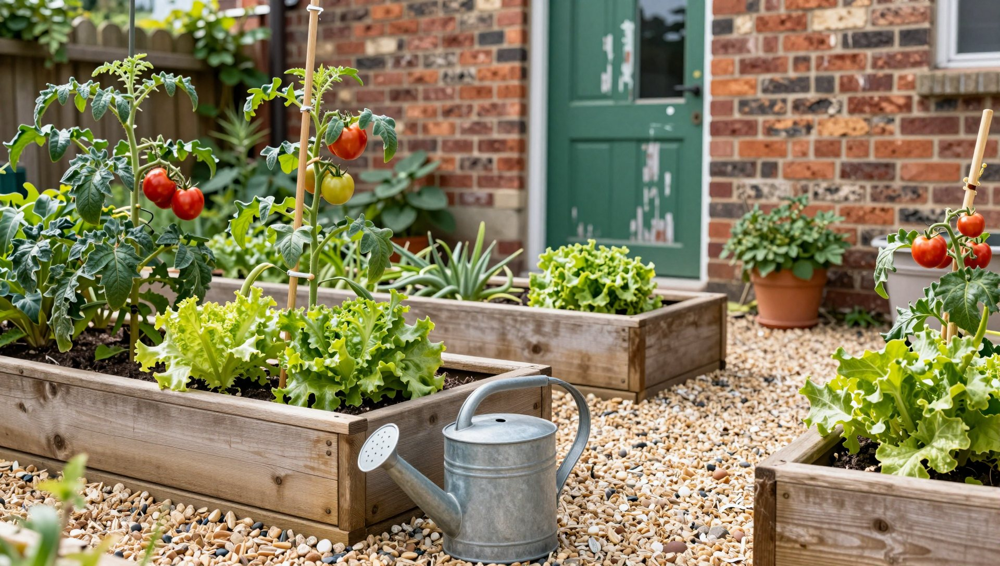
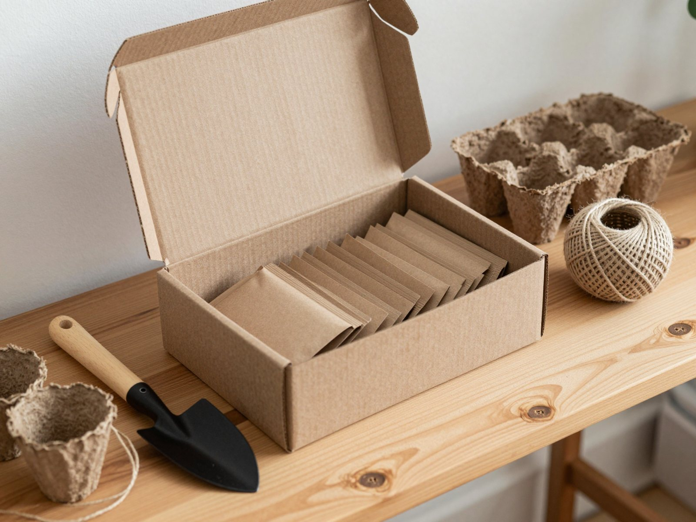
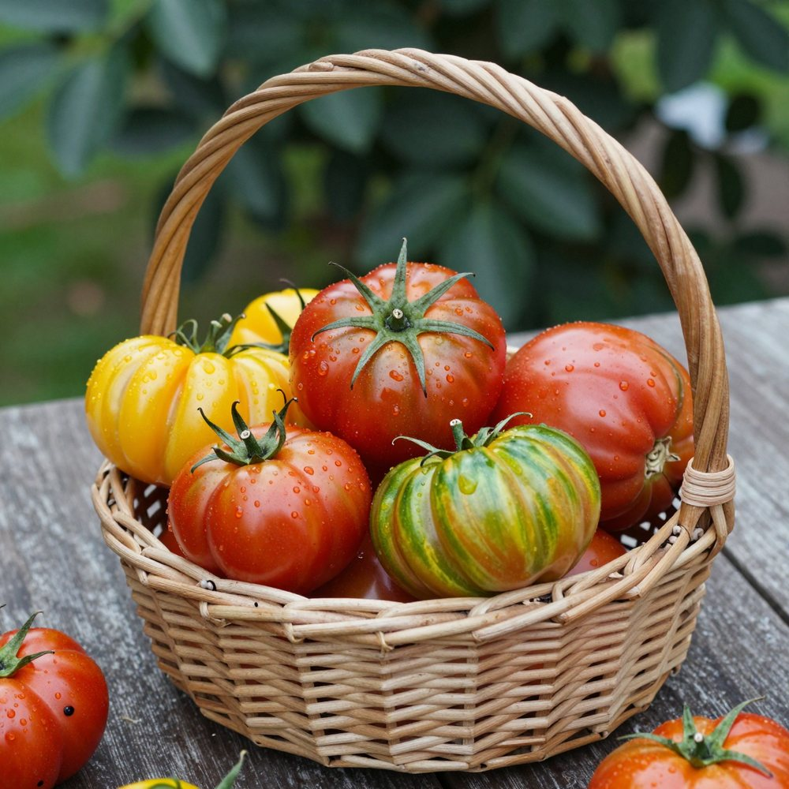
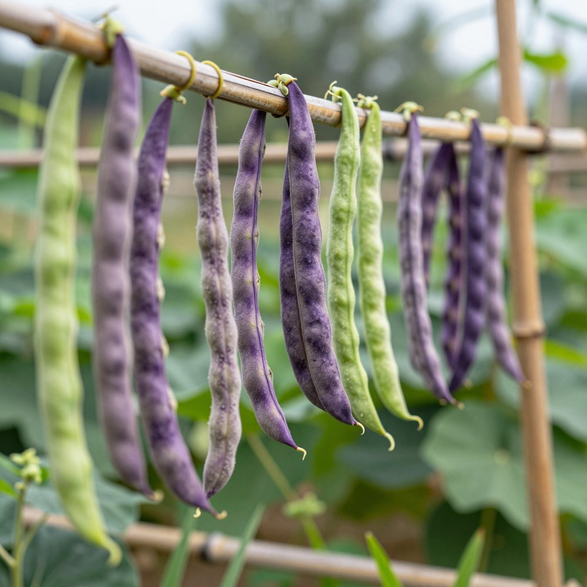
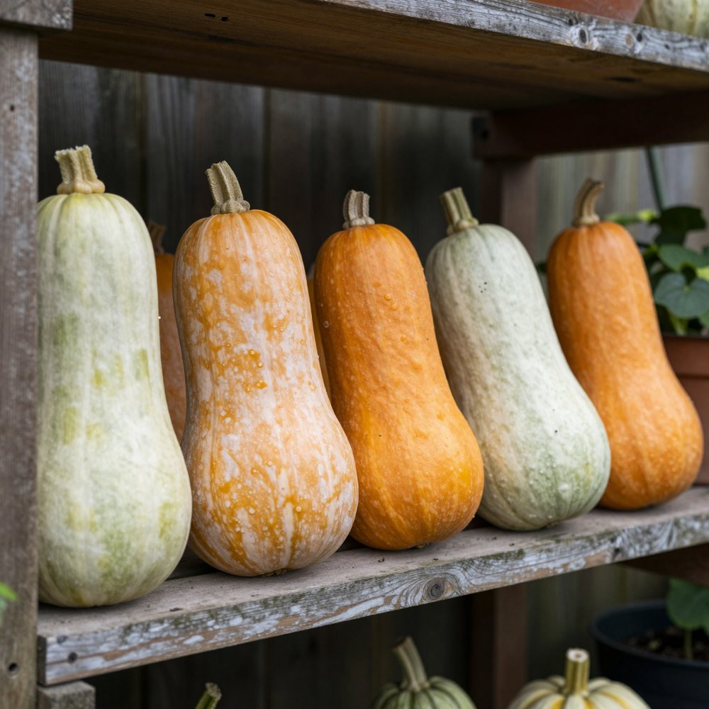
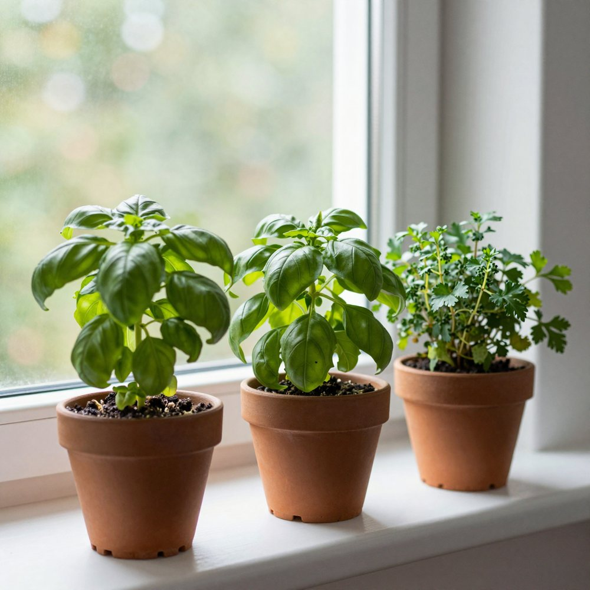

Grow the tomatoes people still talk about.
Bramblecote sends the right seeds for your plot at the moment to sow them, with a calendar that knows your frost dates.

Why growers switch to Bramblecote
Garden centre racks are planned for shoppers. Our seed list is planned for your soil, your shade and the weeks you actually have.
Chosen for your plot
Tell us your postcode, your light and your space. We pick varieties that crop there, not just ones that photograph well.
Sent when it is time
Seeds arrive a fortnight before their sowing window opens, so nothing sits in a drawer until it is too late.
Saved by growers
Every variety is open-pollinated and grown out by small farms, so you can save your own seed next autumn.

A season in a box
Each box holds six to eight packets for the coming month, a sowing card for every one and a little twine for the bean poles.
- Six to eight varieties
- Sowing cards
- Frost-date calendar
- Free swaps
How it works
Describe your plot
Sun, soil and size, in two minutes. A balcony counts.
We plan the season
A sowing calendar built around your last frost and your first.
Sow as it arrives
Each month's packets land just before their window opens.
From last summer's members
A few of the harvests our growers sent in at the end of the season.




My clay soil finally grew carrots worth pulling. The box knew what my plot could do before I did.
Priya Lund, member since the second season
Questions
Can I pause over winter?
Yes. Pause from your account page any month and pick up again in spring.
What if a packet does not suit me?
Send it back in the envelope provided and we will swap it for another variety.
Do you post outside the UK?
Not yet. Seed import rules differ in every country, and we would rather get them right.